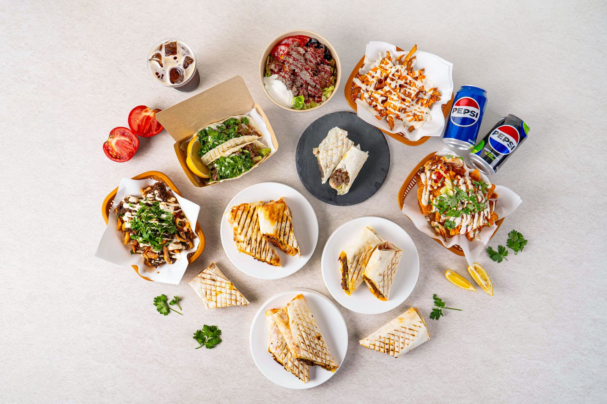
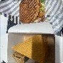
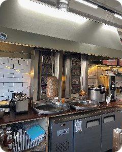
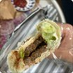
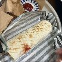
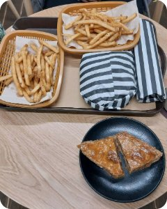
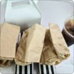

진주에서 맛보는 세계 길거리 음식
터키 케밥·뉴욕 라이스보울·호주 스낵팩을 할랄인증 사용한 소고기와 닭고기로, 개양터미널 바로 앞에서.
진주에서의 하루
가끔은 늘 먹던 것 말고, 다른 걸 먹고 싶을 때가 있습니다.
어제 점심은 과제를 하면서 햄버거로 때웠고, 밤에는 친구와 게임을 하고 집에 가는 길에 치킨을 먹었습니다. 맛은 있는데, 뭔가 특색 있는 음식을 먹고 싶을 때가 자주 있지 않나요?
저도 그랬습니다. 경상국립대에 다니던 시절, 저는 매일 햄버거, 부리또, 샌드위치를 돌려가며 먹었습니다. 먹는 게 하루의 낙이었던 저는 뭔가 색다른 걸 찾아 나섰습니다. 서울, 대구, 대전, 부산까지 가봤지만 특별한 건 없었습니다.
그래서 직접 만들기 시작했습니다. 처음엔 친구들에게 해줬고, 아르바이트를 하던 곳에서는 단골손님들에게 나눠드리기도 했습니다. 맛있게 드시는 모습을 보면서 마음을 먹었습니다. 언젠가 이 음식으로 내 가게를 열겠다고.
작년에 그 가게를 열었습니다. 그리고 한국 사람 입맛에 맞는 소스와 레시피를 오랫동안 다듬었습니다. 그렇게 세계 어느 길거리에서나 먹는 그 음식을, 진주에서 제 손으로 만들게 됐습니다.
오늘 하루, 1시간만 일상에서 벗어나 짧은 여행을 떠나보는 건 어떠세요?
경대케밥에서 드실 수 있는 세계 길거리 음식

할랄 라이스보울
뉴욕 길거리 할랄 푸드 트럭에서 택시기사들이 즐겨 먹던 한 그릇입니다. 밥 위에 구운 고기와 채소를 올리고 소스 두 가지를 뿌려 먹습니다.

할랄 스낵팩
호주에서 사랑받는 길거리 음식입니다. 바삭한 감자튀김 위에 고기와 소스를 듬뿍 얹어 포크로 떠 먹습니다.

워킹타코
미국에서 들고 다니며 먹는 타코입니다. 도리토스 봉지를 열어 고기와 채소와 소스를 담고 봉지째 떠 먹습니다.

케밥
또띠아에 할랄 고기와 채소를 넣고 화이트·레드소스를 뿌려 말았습니다. 우즈베키스탄 출신 요리사가 현지 방식 그대로 굽습니다.
먼저 드셔 본 손님들의 이야기
배달의민족 · 네이버에 손님이 직접 남긴 리뷰를 그대로 옮겼습니다. 닉네임은 일부 가렸습니다.
이 음식과 함께라면 내가 있는 이 공간이 마치 터키의 길거리를 지나가고 있는거같은 느낌을 받을 수 임ㅅ으며, 터키여행가서 케밥을 자주 먹었는데 현지음식이랑 별반 다른거 없다고 생각할만큼 맛있었습니다.

현지인음식이라 너무좋아요 여행안가고 맛집 가서 좋아요 👍

남강축제같은곳 가면 파는 케밥보다 단품가격은 비슷하지만 양이 훨씬많고 고기도 두툼하고 무엇보다 맛있어요 !


익숙하면서 새로운 맛이 맛있어요~! 햄버거에 비해 부담이 덜되고 좋아요! 다음에 또 방문할게요☺

서울 살 때 케밥을 자주 사먹었는데 진주에도 파는지 몰랐네요. 맛있어요 종종 시키겠습니다
케밥 처음 먹어보는데 맛있어요!! 고기도 크고 감자튀김 얇아서 좋아요ㅠㅠ
케밥 먹고싶어서 찾아보고 방문했어요 직원분들도 너무 친절하시고 매장도 깔끔하구 무엇보다 케밥 왕 맛있어요 !!! 재방문의사 10000!
아이들이 맛있다고 좋아하네요. ^_^ 리뷰 보니 크다고 하던데 진짜 크네요. 😀 맛있게 잘먹었어요. 😄

찾아오시는 길
경상남도 진주시 가좌길74번길 12 1층 (가좌동 639-15)
진주개양시외버스승강장(개양터미널) 바로 앞입니다. 경상국립대학교 가좌캠퍼스 북문에서 519m입니다.
지금 간판은 예전 케이크 가게 간판 그대로입니다. 곧 경대케밥 간판으로 바꿉니다.
전용 주차장은 없습니다. 근처 가호 1 노상 공영주차장(가좌동 1407-1)을 이용해 주세요.